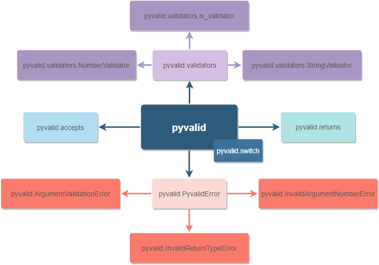

pyvalid¶
The pyvalid is the Python validation tool for checking a function’s input parameters and return values. Purposes of the pyvalid package:
Provide an ability to validate a user input (such as usernames, phone numbers, emails, dates and times, etc) and minimize the amount of code required for the implementation of the comprehensive validation systems;
Add an additional layer of dynamic code analysis for the development and testing stages — pyvalid will raise the exception if a function accepts or returns unexpected values and it’s always possible to disable pyvalid in production if needed.
Help to catch runtime issues.
How to install¶
With PyPI:
pip install -U pyvalidManually:
python setup.py install
How to use¶
The schema below reveals the general structure of the pyvalid package:
{kind=link}
The package consists of two decorators: accepts and returns, which validates the function’s input and output values accordingly. To know how to validate the data, accepts and returns decorators should receive the information about excepted values/types/validators.
The very basic example below shows how to use accepts and returns decorators.
from pyvalid import accepts, returns
@accepts(int, int)
@returns(float)
def divide(num_1, num_2):
return num_1 / num_2
divide(8, 42)
# Returns float value
divide('Python', 42)
# Raises the ArgumentValidationError exception, since the 1st argument is
# the str value, when we're expecting int values only.
If just specifying an expected type or value is not enough, then it’s worth to
use the custom validator. All the built-in validators are located in the
pyvalid.validators module and it’s also possible to create a new one using
the is_validator decorator or through extending the AbstractValidator
class.
We can flexibly control the state of the pyvalid validation using the pyvalid.switch module. This module provides an ability to switch the pyvalid on/off.
In most cases, it’s worth to use the pyvalid features to validate incoming/outcoming data, such as: user input, the data sent to the API, etc.
But it’s also possible to use the pyvalid package as a part of the CI/CD processes only:
Apply the accepts and returns decorators to all needed functions and methods.
Perform unit testing, integration testing, etc.
The accepts and returns decorators will raise exceptions in case if the input/output data is not valid.
Collect information about raised exceptions and fix the code, which causes them.
Turn off the pyvalid before going live in order to avoid unnecessary exceptions in production.
pyvalid.accepts¶
pyvalid.accepts(*allowed_arg_values, **allowed_kwargs_values)¶
The decorator which validates input parameters of the wrapped function.
To use it, we need to specify the list of allowed types or values. If the function’s input doesn’t match the allowed types/values, one of the following errors will be thrown:
pyvalid.ArgumentValidationError— when the actual type/value of the function’s argument is different from the expected one;pyvalid.InvalidArgumentNumberError— when the number/position of function’s arguments is incorrect.
Examples of usage:
Let’s define the multiply function, which accepts only int values, and see
how does it work with other types.
from pyvalid import accepts
@accepts(int, int)
def multiply(num_1, num_2):
return num_1 * num_2
multiply(4, 2)
# Returns 8.
multiply(3.14, 8)
# Raises the ArgumentValidationError exception, since the 1st argument is the
# float value, when we're expecting int values only.
multiply(3, 'pyvalid')
# Raises the ArgumentValidationError exception, since the 2nd argument is the
# str value, when we're expecting int values only.
multiply(128)
# Raises the InvalidArgumentNumberError exception, since the second argument
# is missing.
pyvalid.returns¶
pyvalid.returns(*allowed_return_values)¶
The decorator which validates the value returned by the wrapped function.
To use it, we need to specify the list of expected return types or values. If the
function’s return value doesn’t match the allowed types/values, the
pyvalid.InvalidReturnTypeError error will be thrown.
Examples of usage:
Let’s define the multiply function, which returns only int values, and see
how does it work with other types.
from pyvalid import returns
@returns(int)
def multiply(num_1, num_2):
return num_1 * num_2
multiply(4, 2)
# Returns 8.
multiply(3.14, 8)
# Raises the InvalidReturnTypeError exception, since the function returns the
# float value, when we're expecting int values only.
multiply(3, 'pyvalid')
# Raises the InvalidReturnTypeError exception, since the function returns the
# str value, when we're expecting int values only.
pyvalid.switch¶
pyvalid.validators¶
-
pyvalid.validators.is_validator¶ alias of
pyvalid.validators.__base.Validator
-
class
pyvalid.validators.AbstractValidator[source]¶ Bases:
pyvalid.validators.__base.Validator-
abstract property
checkers¶
-
abstract property
-
class
pyvalid.validators.IterableValidator(**func_kwargs)[source]¶ Bases:
pyvalid.validators.__base.AbstractValidatorThis class performs validation on the content of the iterable to check if the given iterable is valid or not. The iterable can be either a list, tuple or even keys or values of a dictionary.
Example:
validator = IterableValidator( empty_allowed=False, elements_type=int, min_val=0, max_val=50 ) @accepts(validator) def example([1, 3, 7, 10]): pass
-
iterable_types= (<class 'list'>, <class 'tuple'>, <class 'dict'>, <class 'set'>)¶
-
classmethod
empty_iterable_checker(val, empty_allowed)[source]¶ Checks if the iterable is empty or not.
- Parameters
val (collections.abc.Iterable) – Iterable whose contents needs to be validated.
empty_allowed (bool) – If this flag is set to
True, this method raises exception and terminates the execution if the iterable is empty. If set toFalse, it raises a warning and continues with the execution.
- Returns (bool):
- True:
If the iterable is not empty.
- False:
If the iterable is empty.
-
classmethod
element_type_checker(val, elements_type)[source]¶ Checks if all the elements of the iterable are of required type.
- Parameters
val (collections.abc.Iterable) – Iterable whose contents needs to be validated.
elements_type (datatype) – Expected type of all the elements in the iterator.
- Returns (bool):
- True:
If all elements of the iterable are of required type.
- False:
If at least one element of the iterable is not of required type.
-
classmethod
elements_min_val_checker(val, min_val)[source]¶ Checks if all the elements of the iterable are greater than or equal to the specified value.
- Parameters
val (collections.abc.Iterable) – Iterable whose contents needs to be validated.
min_val (int) – Expected minimum value the iterable must contain.
- Returns (bool):
- True:
If all the elements of the iterable are greater than or equal to the <min_val>.
- False:
If at least one element of the iterable is less than the <min_val>.
-
classmethod
elements_max_val_checker(val, max_val)[source]¶ Checks if all the elements of the iterable are less than or equal to the specified value.
- Parameters
val (collections.abc.Iterable) – Iterable whose contents needs to be validated.
max_val (int) – Expected maximum value the iterable must contain.
- Returns (bool):
- True:
If all the elements of the iterable are less than or equal to the <max_val>.
- False:
If at least one element of the iterable is greater than the <max_val>.
-
property
checkers¶
-
-
class
pyvalid.validators.NumberValidator(**func_kwargs)[source]¶ Bases:
pyvalid.validators.__base.AbstractValidator-
number_types= (<class 'int'>, <class 'float'>)¶
-
property
checkers¶
-
pyvalid.ArgumentValidationError¶
Raised when the type of an argument to a function is not what it should be.
-
pyvalid.ArgumentValidationError.args¶
-
pyvalid.ArgumentValidationError.with_traceback()¶ Exception.with_traceback(tb) – set self.__traceback__ to tb and return self.
pyvalid.InvalidArgumentNumberError¶
Raised when the number or position of arguments supplied to a function is incorrect.
-
pyvalid.InvalidArgumentNumberError.args¶
-
pyvalid.InvalidArgumentNumberError.with_traceback()¶ Exception.with_traceback(tb) – set self.__traceback__ to tb and return self.
pyvalid.InvalidReturnTypeError¶
Raised when the return value is the wrong type.
-
pyvalid.InvalidReturnTypeError.args¶
-
pyvalid.InvalidReturnTypeError.with_traceback()¶ Exception.with_traceback(tb) – set self.__traceback__ to tb and return self.
Examples¶
Function calculate in the example below has the following limitations:
Function should return
intorfloatvalues only;First parameter must be
strvalue;Second parameter must be
intvalue or be equal to the2.0;Third parameter must be
intorfloatvalue.
from pyvalid import accepts, returns
@returns(int, float)
@accepts(str, (int, 2.0), (int, float))
def calculate(operator, val1, val2, val3):
expression = '{v1} {op} {v2} {op} {v3}'.format(
op=operator, v1=val1, v2=val2, v3=val3
)
return eval(expression)
calculate('*', 2, 3, 4)
# Returns 24.
calculate(operator='*', val1=2, val2=3.0, val3=4)
# Returns 24.0.
calculate('*', 2.0, 3, 4)
# Still returns 24.0.
calculate('*', 3.14, 3, 4)
# Raises the ArgumentValidationError exception, because the second
# argument is not valid.
calculate('*', 2, 3, '"4"')
# Raises the InvalidReturnTypeError exception, because of invalid return
# value: function returns the str value, when only int and float values
# are allowed.
The example below demonstrates how to use the accepts and returns
decorators in the classes. Please pay attention to the method connect of
the class SqlDriver. In these classes we’re using the accepts
decorator to validate keyword arguments.
from pyvalid import accepts, returns
from collections.abc import Iterable
class SqlDriver(object):
@returns(bool)
@accepts(object, host=str, port=int, usr=str, pwd=str, db=[str, None])
def connect(self, **kwargs):
conn_req = 'tsql -S {host} -p {port} -U {usr} -P {pwd} -D {db}'
conn_req = conn_req.format(**kwargs)
try:
print('Establishing connection: "{}"'.format(conn_req))
# Some code, which may cause the ConnectionError
return True
except ConnectionError:
return False
@returns(bool)
def close(self):
try:
print('Closing connection')
# Some code, which may cause the ConnectionError
return True
except ConnectionError:
return False
@returns(None, dict)
@accepts(object, str, Iterable)
def query(self, sql, params=None):
try:
if params is not None:
sql = sql.format(*params)
query_info = 'Processing request "{}"'.format(sql)
print(query_info)
return dict()
# Some code, which may cause the ConnectionError
except ConnectionError:
return None
sql_driver = SqlDriver()
conn_params = {
'host': '8.8.8.8',
'port': 1433,
'usr': 'admin',
'pwd': 'password',
'db': 'wiki'
}
sql_driver.connect(**conn_params)
sql = 'SELECT * FROM ProgrammingLang'
pl = sql_driver.query(sql)
sql = 'SELECT * FROM ProgrammingLang WHERE name={}'
python_pl = sql_driver.query(sql, ('Python',))
sql_driver.close()
When we need a bit more complex validators, we may use built-in pyvalid`
validators available in the ``pyvalid.validators module.
For example, here we’re using the StringValidator validator based on the
regular expression and the NumberValidator based on the min/max allowed
values:
from pyvalid import accepts, returns
from pyvalid.validators import NumberValidator, StringValidator
@accepts(StringValidator(re_pattern=r'^[A-Za-z]+\s?[A-Za-z]+\s?[A-Za-z]+$'))
@returns(NumberValidator(min_val=0, max_val=10))
def get_review(name):
message = 'Hello, {}! Please review our application from 0 to 10.'
print(message.format(name))
return float(input())
review = get_review('Elon Musk')
print(review)
# Will raise the InvalidReturnTypeError exception only if user enter
# the value, which is not in the [0, 10] range.
another_review = get_review('Elon Musk 2')
# Raises the ArgumentValidationError exception, since the "Elon Musk 2"
# value doesn't match the pattern.
The example below explains how to use the custom validator. It’s pretty
easy actually, we just need to apply the pyvalid.validators.is_validator
decorator to the validation function.
from pyvalid import accepts
from pyvalid.validators import is_validator
class User(object):
registered_users = list()
class Validator(object):
unsafe_passwords = [
'111111', '000000', '123123',
'123456', '12345678', '1234567890',
'qwerty', 'sunshine', 'password',
]
@classmethod
@is_validator
def login_checker(cls, login):
if isinstance(login, str) and 1 <= len(login) <= 16:
for reg_user in User.registered_users:
if login == reg_user.login:
return False
return True
@classmethod
@is_validator
def password_checker(cls, password):
return (
isinstance(password, str)
and
6 <= len(password) <= 32
and
password not in cls.unsafe_passwords
)
def __init__(self, login, password):
self.__login = None
self.login = login
self.__password = None
self.password = password
User.registered_users.append(self)
@property
def login(self):
return self.__login
@login.setter
@accepts(object, Validator.login_checker)
def login(self, value):
self.__login = value
@property
def password(self):
return self.__password
@password.setter
@accepts(object, Validator.password_checker)
def password(self, value):
self.__password = value
user = User('admin', 'Str0ng_P@ssw0rd!')
print(user.login, user.password)
# Outputs: "admin Str0ng_P@ssw0rd!"
user.password = 'qwerty'
# Raises the ArgumentValidationError exception, because the
# User.Validator.password_checker method returns False.
user = User('admin', 'An0ther_Str0ng_P@ssw0rd!')
# Raises the ArgumentValidationError exception, because the
# User.Validator.login_checker method returns False.
License¶
This project is distributed under the MIT License.